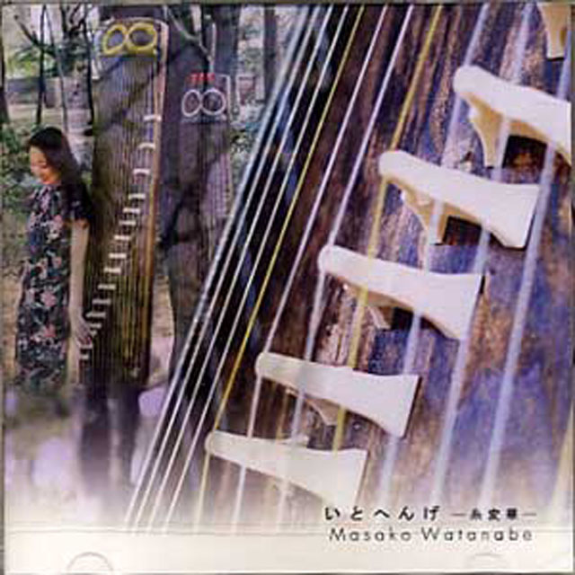
発売：(有)JAPAN KAIZAN MUSIC
琴・二十絃箏・三絃・十七絃によるソロファーストアルバム。
収録曲：空を推す／五足十三和十八番／十七絃二面の為の一章／箏譚詩集第2集より 華やぎへの序 華やぎ／花簪
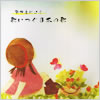
発売：(有)大日本家庭音楽会 渡辺泰子編曲
収録曲（全30曲）：赤とんぼ・大きな古時計・里の秋・故郷・村祭り・椰子の実・ゆりかごの歌・茶摘み・冬景色・小さい秋みつけた・かあさんの歌・四季の歌・内緒の話・うれしいひなまつり・赤い靴・シャボン玉・荒城の月・さくら貝の歌・花嫁人形・平城山・船頭小唄・さくらさくら・浜千鳥・雨降りお月さん・早春賦・夏の思い出・みかんの花咲く丘・旅愁・夕焼けこやけ・おぼろ月夜
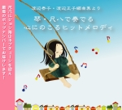
演奏：渡辺泰子・渡辺正子・丸田美紀・ジョン海山ネプチューン
収録曲：ルパン三世・タッチ・キューティハニー・もののけ姫・いつも何度でも・ルージュの伝言・サザエさん・ぼくはくま・お江戸日本橋・とうりゃんせ・さくら・四季の歌・夏の思い出・荒城の月・シルクロード・沖縄メドレー・花祭り・コンドルは飛んでいく・テイク ファイブ
収録曲：花・亜麻色の髪の乙女・ジュピター・島唄・もらい泣き・いつも何度でも・Love Love Love・世界に一つだけの花・My heart will go on・君をのせて・涙そうそう・見上げてごらん夜の星を
収録曲：春なのに・戦場のメリークリスマス・春よ、来い・言葉にできない・赤いスイトピー・雪の華・なごり雪・未来へ・粉雪・花（ORANGE RANGE）・朧月夜～祈り・千の風になって
収録曲：北国絶唱・谺の詩・風の魔術師・スターズギフト～星の贈り物～・巴・HITO-TOSE ─春夏秋冬─
収録曲：涙そうそう・ことうた～日本のうた～・蕾・ことうた～わらべ唄～・島唄・THE KOKIRIO・TSUNAMI・ことうた～民謡～
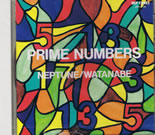
収録曲：キャニオンビュー・月の精霊・空を推す・本末・町へ・五足十三和十八番
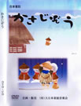
琴・尺八と語りの音楽DVD＋CD 二枚組。
映像・創作はりえ：渡辺順子
DVDお手本映像と、音楽なしパワーポイント用CD付き。
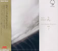
収録曲：飛天・フォア・ファン・ノーウォールズ・イーザー・ウェイ・テンツク・インザ・ディスタンス・紅岩・ミダレ・ローズィ
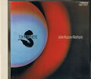
収録曲：大和の曙・七条・トウキョウブルース・ジャングル・トレール・聴光・時空の綾・涌流・暖流・奔流・空想
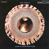
収録曲：The Circle / Soul of the Deep / Tokyo Pace / Ryukyu / India Indigo / Mountain Mist / Spring Breeze / Spring Lift / North of NoPlace / Musashi
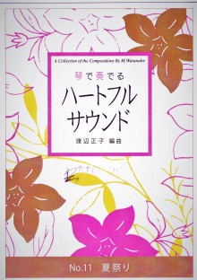
渡辺正子 編曲／箏2・十七絃・尺八の三重奏楽譜（五線譜付き）
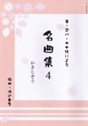
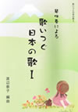
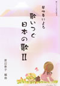
妖怪ウォッチ
「ようかい体操第一！」
「ゲラゲラポーのうた」
マルマルモリモリ！
筝2・十七絃
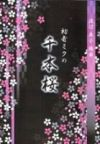
初音ミクの千本桜
筝2・十七絃
百万本のバラ
筝2・十七絃・尺八
箏2・十七絃・尺八の四重奏曲
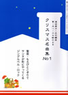
No.1
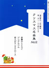
No.2
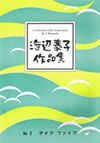